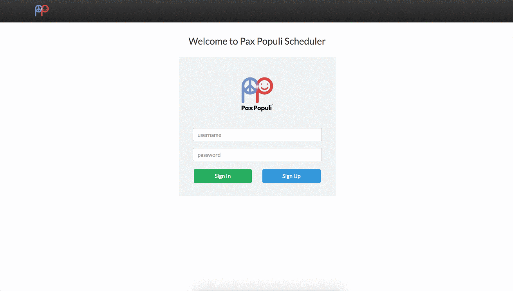
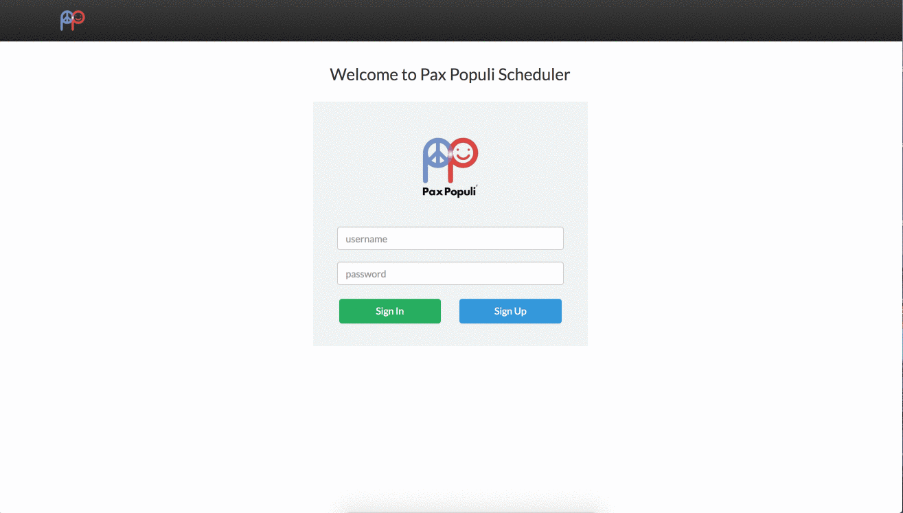

Code for Good: Scheduler Web App
Project for MIT's 6.S187: Code For Good
Check out the GitHub repo for my group's project for Code for Good, a class I took at MIT during Jan 2017. I was a member of a four-person team, and we were paired up with Pax Populi, a local non-profit for education. We built and designed a web app to help pair tutors and students up for an 11-week class, making sure to account for timezone differences (the non-profit serves students and tutors around the globe) and daylight savings time complications, and some additional constraints.
I helped design the scheduling algorithm from a high level (I didn't implement this in code, another team member did). I was one of two web developers on the team, so I had a big role in writing and debugging the web code. My main job was to implement functionalities for submitting, editing, and deleting class registrations from the backend to the UI. I also helped teach other team members about web development and the technologies that we used to build the app which were Node.js, MongoDB, Angular.js, Express.js, and Handlebars.js.
In addition to providing functionality for generating schedules for student-tutor pairs, we were tasked with replacing the organization's account registration system. We needed to support four types of users and collect different types of registration information from each type of user. I was in charge of building validation for our lengthy sign up and registration forms, and wrote code to provide user feedback on the forms (if they put in an invalid value, for example), writing client-side code that prevented form submission with bad or incomplete fields, and server-side code that validated data before writing it to the database.
For more info about this project, see my blog posts detailing our group's progress here, here, and here.